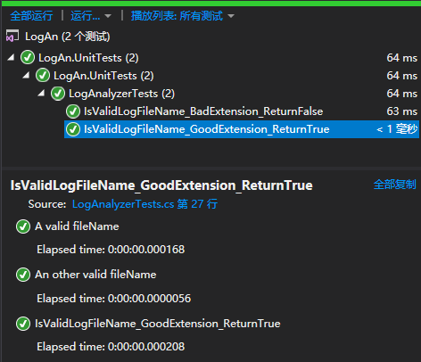

关于单元测试的定义和好处可以借用Stephen Cleary的一段话来概括：
单元测试是现代开发的基础。对项目进行单元测试的好处非常容易理解：单元测试降低了 Bug 数量，缩短了上市时间，防止过度耦合的设计。这些都是很好的优势，但它还有更多与开发人员更直接相关的优点。在我编写单元测试时，我会对代码更有信心。在已测试的代码中更易于添加功能或修复 Bug，因为在代码发生更改时，单元测试起着安全网的作用。
前几个月重温了单元测试的艺术。毕竟是14年的书内容有点旧，于是试着结合书中的内容和一些新的知识点写进这篇文章，希望对自己及各位读者有帮助。
TDD是另一个话题，这里就不涉及了。
《单元测试的艺术》书中推荐NUnit，VS2019中新建单元测试项目只有MSTest V2、NUnit和xUnit三种。微软自己的项目也不一定会使用MSTest，例如CoreFX就在用xUnit。
不过我更喜欢MSTest V2，因为从旧的MSTest升级过来几乎没有学习成本，也不用向上司解释为什么要换框架。MSTest已经是个开源项目，WindowsCommunityToolkit就在用MSTest。
万事起头难，最难的就是命名。OnResolveShouldAddSearchDirectoryListOnANeedToBasis这种命名简直吓死人，明明觉得每个单词都认得但感觉就是看不明白。
《单元测试的艺术》书中推荐了一组测试命名的规则。
项目 创建一个名为[ProjectUnderTest].UnitTests的测试项目。
类 对应被测试项目中的一个泪，创建一个名为[Classname]Tests的类。
工作单元 对每个工作单元（一个方法，或者几个方法组成的一个逻辑组，或者及各类），创建一个如下命名的测试方法：[UnitOfWorkName]_[ScenarioUnderTest]_[ExpectedBehavior]。
测试方法名称的三个部分：
从一个简单的类开始解释这个命名规则：
public class LogAnalyzer
{
public bool IsValidLogFileName(string fileName)
{
if (fileName.EndsWith(".SLF") == false)
return false;
return true;
}
}为这个函数创建对应的单元测试，假设我们传入错误的文件名，预期返回False，则测试方法命名为IsValidLogFileName_BadExtension_ReturnFalse。不需要在函数名中加入“Test”，这种命名本身已暗示自己是个测试方法。
namespace LogAn.UnitTests
{
[TestClass()]
public class LogAnalyzerTests
{
[TestMethod()]
public void IsValidLogFileName_BadExtension_ReturnsFalse()
{
Assert.Fail();
}
}
}单元测试通常包含三个行为：
以IsValidLogFileName_BadExtension_ReturnFalse为例：
[TestMethod()]
public void IsValidLogFileName_BadExtension_ReturnsFalse()
{
var analyzer = new LogAnalyzer();//Arrange
var result = analyzer.IsValidLogFileName("filewithbadextension.foo");//Act
Assert.IsFalse(result);//Assert
}要覆盖多个测试用例可以使用DataRow实现参数化测试（MSTest V1没有这个Attribute），并且可以为每一个测试用例命名，运行测试后可以看到测试用例的名称：
[TestMethod()]
[DataRow("filewithbadextension.foo")]
[DataRow("somefile.exe")]
public void IsValidLogFileName_BadExtension_ReturnsFalse(string fileName)
{
var analyzer = new LogAnalyzer();
var result = analyzer.IsValidLogFileName(fileName);
Assert.IsFalse(result);
}
[TestMethod()]
[DataRow("filewithbadextension.SLF", DisplayName = "A valid fileName")]
[DataRow("somefile.SLF",DisplayName = "An other valid fileName")]
public void IsValidLogFileName_GoodExtension_ReturnsTrue(string fileName)
{
var analyzer = new LogAnalyzer();
var result = analyzer.IsValidLogFileName(fileName);
Assert.IsTrue(result);
}
在以前很流行使用ExpectedExceptionAttribute检查异常，代码如下：
[TestMethod()]
[ExpectedException(typeof(ArgumentNullException))]
public void IsValidLogFileName_EmptyFileName_Throws()
{
var analyzer = new LogAnalyzer();
analyzer.IsValidLogFileName(null);
}这个方法有一些问题：
更好的做法是使用Assert.ThrowsException
[TestMethod()]
public void IsValidLogFileName_EmptyFileName_Throws()
{
var analyzer = new LogAnalyzer();
Assert.ThrowsException<ArgumentNullException>(()=>analyzer.IsValidLogFileName(null));
}进行单元测试时，很重要的一点是保证之前测试的遗留数据或者实例得到销毁，新测试的状态是重建的，就好像之前没有测试运行过一样。
MSTest提供了一组Attribute用于初始化及释放资源。
| Attribute | 功能 |
|---|---|
| AssemblyInitialize() | 执行程序集中的所有测试之前运行 |
| ClassInitialize() | 测试类中的任意测试执行之前运行 |
| TestInitialize() | 测试之前要运行 |
| TestCleanup() | 测试之后运行 |
| ClassCleanup() | 测试类中所有的测试都执行以后运行 |
| AssemblyCleanup() | 执行程序集中的所有测试之后运行 |
[AssemblyInitialize()]
public static void AssemblyInit(TestContext context)
{
Debug.WriteLine("AssemblyInit " + context.TestName);
}
[ClassInitialize()]
public static void ClassInit(TestContext context)
{
Debug.WriteLine("ClassInit " + context.TestName);
}
[TestInitialize()]
public void Initialize()
{
Debug.WriteLine("TestMethodInit");
}
[TestCleanup()]
public void Cleanup()
{
Debug.WriteLine("TestMethodCleanup");
}
[ClassCleanup()]
public static void ClassCleanup()
{
Debug.WriteLine("ClassCleanup");
}
[AssemblyCleanup()]
public static void AssemblyCleanup()
{
Debug.WriteLine("AssemblyCleanup");
}输出结果如下：
AssemblyInit IsValidLogFileName_EmptyFileName_Throws
ClassInit IsValidLogFileName_EmptyFileName_Throws
TestMethodInit
TestMethodCleanup
TestMethodInit
TestMethodCleanup
TestMethodInit
TestMethodCleanup
TestMethodInit
TestMethodCleanup
TestMethodInit
TestMethodCleanup
ClassCleanup
AssemblyCleanup外部依赖项常常是不写单元测试的借口，如文件系统、网络服务甚至系统时间，开发者往往说没法控制而逃避写单元测试。这种情况可以使用stub或mock破除依赖。
一个存根(stub)是对系统中存在的一个依赖项(又或者协作者)的可控制的替代物。通过使用存根，你在测试代码无需直接处理这个依赖项。
如果前面的LogAnalyzer改成如下形式：
public bool IsValidLogFileName(string fileName)
{
//读取配置文件，由配置文件判断是否支持这个扩展名
}一旦测试依赖了文件系统，你进行的就是集成测试，带来了所有集成测试相关的问题————运行速度慢，需要配置等等。这种情况下可以使用一个stub代替文件系统的依赖。
public class LogAnalyzer
{
private IExtensionManager _manager;
public LogAnalyzer(IExtensionManager manager) //定义测试代码可以调用的构造函数
{
_manager = manager;
}
public bool IsValidLogFileName(string fileName)
{
return _manager.IsValid(fileName);
}
}
public interface IExtensionManager
{
bool IsValid(string fileName);
}
internal class FakeExtensionManager : IExtensionManager //定义一个最简单的stub
{
public bool WillBeValid { get; set; } = false;
public bool IsValid(string fileName)
{
return WillBeValid;
}
}
[TestMethod()]
public void IsValidLogFileName_NameSupportedExtension_ReturnsTrue()
{
var myFakeManager = new FakeExtensionManager { WillBeValid = true }; //准备一个返回true的stub
var analyzer = new LogAnalyzer(myFakeManager); //传入stub
var result = analyzer.IsValidLogFileName("short.ext");
Assert.IsTrue(result);
}注入stub的方式由很多，《单元测试的艺术》中有详细的介绍，这里略过。
模拟对象(Mock)是系统中的伪对象，它可以验证被测试对象是否按照预期的方式调用了这个伪对象，因此导致单元测试通过或者失败。通常每个测试最多有一个模拟对象。
这次LogAnalyer需要和一个外部的Web服务交互，每次LogAnalyer遇到一个过短的文件名，这个Web服务就会收到一个错误消息。遗憾的是，你要测试的这个Wen服务还没有完全实现，就算实现了，使用这个Web服务会导致测试时间过长。因此这里需要一个Mock，这个Mock只包括需要调用的Web服务方法，然后LogAnalyzer调用这个接口写错误日志。
public interface IWebService
{
void LogError(string message);
}
public class LogAnalyzer
{
private IWebService _service;
public LogAnalyzer(IWebService service) //定义测试代码可以调用的构造函数
{
_service= service;
}
public void Analyze(string fileName)
{
if (fileName.Length < 9)
_service.LogError("Filename too short:" + fileName); //在产品代码中写错误日志
}
}使用mock对象测试LogAnalyzer，注意是对mock对象进行断言，而非LogAnalyer类，因为测试的是LogAnalyer和Web服务之间的交互:
public class FakeWebService : IWebService //定义一个最简单的mock
{
public string LastError { get; private set; }
public void LogError(string message)
{
LastError = message;
}
}
[TestMethod()]
public void Analyze_TooShrtFileName_CallsWebService()
{
var mockService = new FakeWebService();
var analyzer = new LogAnalyzer(mockService);
var tooShortFileName = "abc.ext";
analyzer.Analyze(tooShortFileName);
StringAssert.Contains(mockService.LastError, tooShortFileName); //对模拟对象进行断言
}Fake(伪对象)是通用的术语，可以描述一个stub或mock，，因为stub和mock看想去都很像真实对象。一个伪对象究竟是stub还是mock取决于它在当前测试中的使用方式：如果这个伪对象用来检验一个交互(对其进行断言)，它就是mock，否则就是stub。
如果一个测试只测试一件事情，测试中应该最多只有一个mock，所有其它的伪对象都是stub。如果一个测试有多个mock，这说明你在测试多件事情，会导致测试过于复杂或脆弱。
前面定义的Stub和Mock都使用了Fake-前缀，因为在类中避免使用"mock"和"stub"，那么这个类的对象就可以具有两种行为方式，以后再不同的测试中重用。
手工编写伪对象有很多问题，最明显的问题就是产生大量的编码和维护工作。使用隔离框架是一个更优雅的方案，它可以在运行时动创建和配置伪对象。
.NET的隔离框架有很多，《单元测试的艺术》书中以NSubstitute(简称NSub)为例介绍了隔离框架的基本用法(看起来最近nuget下载量比moq更多)。
这一节介绍一些NSub的基本操作，更多的内容详见官网。
假设我们有一个接口：
public interface ICalculator
{
int Add(int a, int b);
string Mode { get; set; }
event Action PoweringUp;
}NSub用下面的代码创建一个伪对象：
_calculator = Substitute.For<ICalculator>();NSub能自动生成伪对象，这个伪造的ICalculator对象实例时动态生成的，实现了ICalculator接口，但没有实现它的任何方法。从模拟对象创建到测试方式结束，对这个模拟对象的所有调用都会自动记录，保存供后来使用。
使用Returns模拟函数值并断言：
_calculator.Add(1, 2).Returns(3);
Assert.AreEqual(_calculator.Add(1, 2), 3);模拟属性值并断言：
_calculator.Mode.Returns("DEC");
Assert.AreEqual(_calculator.Mode, "DEC");
_calculator.Mode = "HEX";
Assert.AreEqual(_calculator.Mode, "HEX");也可以模拟一组值并逐个断言：
_calculator.Mode.Returns("HEX", "DEC", "BIN");
Assert.AreEqual(_calculator.Mode, "HEX");
Assert.AreEqual(_calculator.Mode, "DEC");
Assert.AreEqual(_calculator.Mode, "BIN");使用Received断言接收到调用，以及DidNotReceive断言没接收到调用：
_calculator.Add(1, 2);
_calculator.Received().Add(1, 2);
_calculator.DidNotReceive().Add(5, 7);Arg类成为参数匹配器，用于控制参数处理：
_calculator.Add(10, -5);
_calculator.Received().Add(10, Arg.Any<int>()); //断言第二个参数时int类型
_calculator.Received().Add(10, Arg.Is<int>(x => x < 0)); //断言第二个参数小于5使用参数匹配器并传入一个function到Returns可以更好地控制返回值：
_calculator.Add(Arg.Any<int>(), Arg.Any<int>())
.Returns(x => (int)x[0] + (int)x[1]);
Assert.AreEqual(_calculator.Add(5, 10), 15);_calculator.When(x => x.Add(Arg.Is<int>(i => i < 0), Arg.Any<int>()))
.Do(context => throw new ArgumentException("invalid"));
Assert.ThrowsException<ArgumentException>(() => _calculator.Add(-5, 0));这里When后面的Lambda指示当第一个参数小于0，然后用Do抛出一个异常。
var eventWasRaised = false;
_calculator.PoweringUp += () => eventWasRaised = true;
_calculator.PoweringUp += Raise.Event<Action>();
Assert.IsTrue(eventWasRaised);NSub使用Raise触发事件。
任何测试，如果它运行速度不快，结果不稳定，或者要用到被测试单元的一个或多个真实依赖物，我就认为它是集成测试。
集成测试是对一个工作单元进行的测试，这个测试对被测试的工作单元没有完全的控制，并使用该单元的一个或多个真实依赖物，例如事件、网络、数据库、线程或随机数产生器等。
集成测试和单元测试的项目应该分开。一般来说，复杂的测试都是集成测试，由于集成测试很慢，可以考虑使用创建一个只包含单元测试的解决方案，这样才可以频繁频繁地执行测试，实行TDD。
私有方法通常比较难测试，不过你可以这么想：私有方法不会无缘无故地存在，最终在某个地方有公共方法会调用这个私有方法。看到一个私有方法的时候，你应该找到使用这个方法的公共用例并对这个公共用例进行测试。
如果一个私有方法真的值得进行测试，那么它也许应该设为公共的，静态的。有几种方式处理私有方法：
使方法成为公共方法。如果它真的那么重要，那把它设为公共的并不一定是坏事。使它变成正式的公共契约可以防止它被任意破坏。
把方法提取到新类。
使方法成为静态方法。
使方法成为内部方法并使用InternalsVisibleTo。
代码覆盖率100%说明什么呢？如果没有做代码审查，这个覆盖率不能说明什么。也许这些测试连断言都没有，只是为了达到更高的覆盖率所写的代码。如果你做了代码审查和测试审查，确保测试优秀而且覆盖了所有代码，那么你就拥有了一个安全网，可以避免愚蠢的错误，同时团队也获得了分享的知识，从持续的学习中获益。
虽然《单元测试的艺术》是一本有点旧的书，但我是不是还是会拿出来重温并推荐给别人，毕竟.NET专门讲单元测试的书不多。如果有其它单元测试方面的优秀书籍请推荐给我。
另外，微软的 单元测试基础 也是个很不错的文档。
单元测试 - Visual Studio Microsoft Docs
Microsoft.VisualStudio.TestTools.UnitTesting Namespace Microsoft Docs
NSubstitute A friendly substitute for .NET mocking libraries